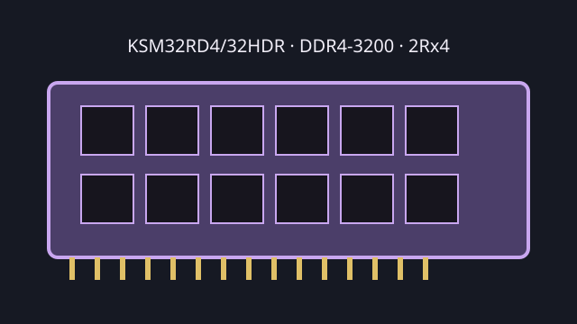

[ KINGSTON SERVER PREMIER // MODEL RECORD ]
KSM32RD4/32HDR
A 32 GB DDR4-3200 server DIMM with ECC and registered signaling. The exact module suffix identifies a Kingston Server Premier product; verify the physical label and revision for service work.

Model specifications
| Capacity / module | 32 GB; 288-pin DDR4 DIMM |
|---|---|
| Rank / chip organization | 2Rx4 dual rank; 4G x72 module organization, 64-bit data plus 8-bit ECC; x4 DRAM devices. |
| Speed / JEDEC | DDR4-3200, 3200 MT/s (PC4-25600R); JEDEC CL22-22-22 at 1.2 V. |
| Voltage | 1.2 V nominal VDD/VDDQ. |
| ECC / buffering | ECC Registered DIMM (RDIMM), not an unbuffered or load-reduced module. |
| Platform compatibility | Requires a board/CPU/firmware combination supporting DDR4-3200 ECC RDIMMs, 32 GB 2Rx4 modules and the specified slot population. Intel Xeon Scalable 3rd Gen lists DDR4-3200 support, but a platform can reduce speed according to CPU, BIOS, DIMM loading and channel rules. Confirm the exact host QVL. |
Service and compatibility notes
- Do not install in a DDR4 UDIMM-only or LRDIMM-only system; registered signaling and ECC support must be provided by the host.
- Use the server's memory population guide to select channel slots and avoid unsupported mixing of ranks and types.
- Archive the module label, SPD readout and system BIOS/CPU details along with error-test results.
Manufacturer & standards sources
- Kingston — KSM32RD4/32HDR product datasheetSKU-specific specification reference.
- Kingston — Server Premier memory product familyManufacturer product-family source.
- Intel — Xeon Gold 6338 specificationsCPU memory-controller context; not exact-module certification.
- JEDEC — JESD79-4 DDR4 SDRAM standard